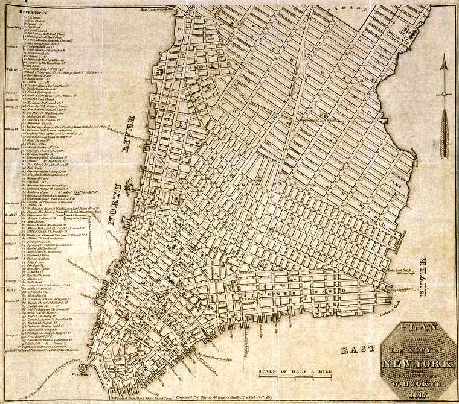

The island we know today was pre-destined. Beginning with Dutch colonial ambitious, interior landfill projects, and continuing by British policies to fill-in the irregular River waterfronts, expansion north became continuous to 1889. By then and forward, Manhattan’s north-to-south and east-to-west Street and Avenue design was complete, its mass transportation open, and a 1,441,000 population was living and working and moving, for a nickel from New York Harbor to Spuyten Duyvil.
Three crucial elements elevated this island to be a world-class metropolis. Only a small fraction
were natural: ice-free borders—harbor, river, creek, and estuary—to reach for; as well as, a rock-solid foundation to build upon—initially, with nearby timber forests to do so. Arguably, the most important initial component was the Commissioners’ Plan of 1811. Their street-and-avenue grid blueprint to pursue is one part; actually, its unrelenting implementation provided fodder for the Manhattan’s unbridled growth for 77 years.
This 1811 urban plan changed much, for better and for worse (too), and much the commissioners could not have possibly foreseen. For example, continuous, surging, upward-mobile, immigrant waves; innovations, like electricity needing underground wiring; a steam- engine two-paddle clipper; an Erie Canal, creating unrelenting demand for Hudson River docks and warehouses; and mass transportation, above and below the ground.
Additionally, the 1811 plan proved flexible, enough so, to allow a uniquely American Dream, “the” Fifth Avenue, which accommodated the pronouncement—I’ve arrived. From its start on Washington Square (a public-health-related city council edict) creation, would be the central roadway connecting Downtown Manhattan with the old Middle Road--separating Manhattan into two portions, as well as catapulting “Fifth,” The Avenue, into a destiny aimed at prominence.
Fifth Avenue immediately captured the imagination of the city’s elite. Its aristocratic appeal was an absolute—set in stone. Furthermore, social awareness, and a complementary, progressive, urbane Central Park concept reinforcing the cornerstone of “livable,” residential, mid-island, neighborhoods. This, as well as generous, civic-minded (sometimes otherwise), land grants, or city council purchases—correcting the blatant Commissioners’ Plan of 1811 failure: a lack of large, open-air, common spaces throughout the island.
Given its 13.4 mile length and a greatest width of 2.3 miles, it is easy with hindsight to appreciate the advantage additional north-and-south avenues and decreased crosstown streets—with supplemental, wider, east-and-west streets would be. Yet in 1811, extensive north- and-south traffic was not the case; the demand was river to river. This practical, but rigid perpendicular “grid plan” (formally The Commissioners’ Map and Survey of Manhattan Island),
ultimately accommodated the initial surveying and dividing a rugged terrain into uniform, rectangular, development blocks nearby the initial settlement.
Additionally, the design—begrudgingly, at times—resulted in the expansion of Broadway ultimately. By increasing a Native People’s trail to join the amalgamated southern Broad Way, and then the mid-island Bloomingdale Road as well as seven miles north connect to the Upper Manhattan Kingsbridge Road ultimately, which provided a continuous land route from Lower Manhattan to the Albany Post Road.
Remarkable remains that the city advanced any plan at all in 1811, and that the Commissioners selected to read the future well enough to conceive a rigid grid, one flexible enough to accommodate sidewalks and curbs; motorcars and mass transit; the elevator, making a skyscraper possible, as they modestly averred as their mandated city limit, West 155th Street, ‘would contain 400,000 souls.’
For a 60,000-citizen city to project even a 400,000 future for itself, and so far north are extraordinary enough instances for a conscious vision; also, the case is made for the plan to end, where precipitous cliffs seemed impenetrable to level, given the engineering know-how, in order to accommodate the necessary grade. Who knew the right approximation would have been 1,500,000 citizens, merely 80 years hence?
The Lay of the Land
Due to established street patterns and a concentrated, population density in 1811, Lower Manhattan as well as southeast and southwest Downtown (Canal to 14th Street). Encompassing East Canal to Houston Streets, spreading east from the Bowery and west to Sixth Avenue, went undisturbed by the upcoming grid design—that would be, relatively speaking.
These vast land tracts were owned by Dutch scions, and the neighborhoods they encompass, are: the Rutgers and Rhinelander clans, Greater Chinatown; James and Oliver De Lancey, Peter and Nicholas Stuyvesant, Lower East Side; Samuel and Nicholas Bayard, Little Italy, LoLiTa, SoHo
and NoHo; Lady Sarah (nee de Lancey) and Sir Peter Warren, the Greenwich District, in particular, the Greenwich Hamlet and Abington Square, one-time Lady Warren’s gardens.
Although the south-to north Avenues have been widen—several times, for the most part— these initial, easterly, family-owned street designs and westerly, haphazard laid out farm lanes overall transformed into roadways, retained their name designations as well as their integrity—from origination to wending ways to unexpected ending points.
East-to-west Streets
The island’s regularly spaced Streets are set perpendicular to equally rigid, uniform Avenues. Between Eighth and 220th Streets, every east-and-west roadway runs continuously from river to river. At the Hudson and East River—the Harlem River, above East 104th Street—each must give way by dead-ending at the north-and-south riverside highways.

Lower Manhattan and Downtown, 1817, including Houston to 23rd Street